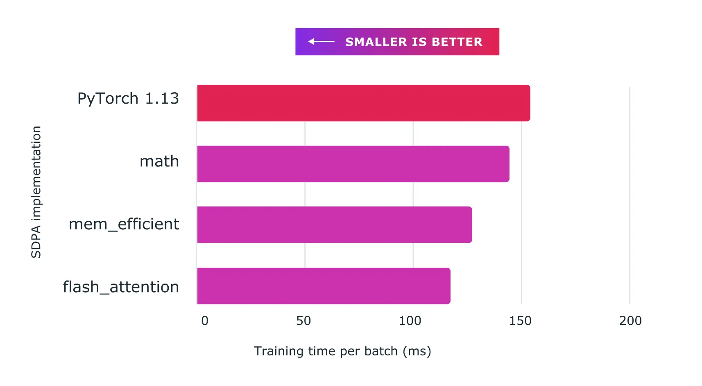

新版本: PyTorch 2.0 版本，我们的下一代版本比以往更快、更 Pythonic 和动态
发布: 2023年03月15日
译者：@片刻
来自 PyTorch团队
我们很高兴地宣布发布PyTorch® 2.0，我们在2022 年 12 月 2 日的PyTorch 会议上强调了这一点！PyTorch 2.0 提供相同的急切模式开发和用户体验，同时从根本上改变和增强 PyTorch 在编译器级别的运行方式，提供更快的性能并支持动态形状和分布式。
这个下一代版本包括 Accelerated Transformers 的稳定版本(以前称为 Better Transformers)；Beta 版包括 torch.compile 作为 PyTorch 2.0 的主要 API、scaled_dot_product_attention 函数作为 torch.nn.function 的一部分、MPS 后端、torch.func 模块中的 functorch API；以及 GPU 和 CPU 上各种推理、性能和训练优化功能的其他 Beta/原型改进。有关 torch.compile 的全面介绍和技术概述，请访问 2.0入门页面。
除了 2.0 之外，我们还发布了 PyTorch 域库的一系列测试版更新，包括树内库以及单独的库，包括 TorchAudio、TorchVision 和 TorchText。随着 TorchX 转向社区支持模式，TorchX 的更新也随之发布。更多详细信息可以在这个图书馆博客中找到。
自 1.13.1 以来，此版本由超过 4,541 次提交和 428 名贡献者组成。我们衷心感谢我们热心社区的贡献。与往常一样，我们鼓励您尝试这些并在我们今年改进 2.0 和整个 2 系列时报告任何问题。
概括：
- torch.compile 是 PyTorch 2.0 的主要 API，它包装您的模型并返回编译后的模型。它是一个完全附加的(和可选的)功能，因此 2.0 根据定义是 100% 向后兼容的。
- 作为 torch.compile 的基础技术，配备 Nvidia 和 AMD GPU 的 TorchInductor 将依靠 OpenAI Triton 深度学习编译器来生成高性能代码并隐藏底层硬件细节。OpenAI Triton 生成的内核可实现与手写内核和专用 cuda 库(如 cublas)相当的性能。
- Accelerated Transformers 使用定制内核架构为缩放点积注意力 (SPDA) 引入了对训练和推理的高性能支持。该API与torch.compile()集成，模型开发人员还可以通过调用新的scaled_dot_product_attention()运算符直接使用缩放点积注意力内核。
- Metal Performance Shaders (MPS) 后端在 Mac 平台上提供 GPU 加速的 PyTorch 训练，并增加了对前 60 个最常用操作的支持，覆盖了 300 多个操作员。
- Amazon AWS 在基于 AWS Graviton3 的C7g 实例上优化了 PyTorch CPU 推理。与之前的版本相比，PyTorch 2.0 提高了 Graviton 的推理性能，包括对 Resnet50 和 Bert 的改进。
- TensorParallel、DTensor、2D parallel、TorchDynamo、AOTAutograd、PrimTorch 和 TorchInductor 的新原型功能和技术。
要查看公开 2.0、1.13 和 1.12 功能提交的完整列表，请单击此处。
Stable 特性
[Stable] 加速 PyTorch 2 Transformers
PyTorch 2.0 版本包含 PyTorch Transformer API 的新高性能实现。在发布 Accelerated PT2 Transformers 时，我们的目标是让整个行业都能负担得起最先进 Transformer 模型的训练和部署。此版本引入了对训练和推理的高性能支持，使用定制内核架构进行扩展点积注意力(SPDA)，扩展了推理“快速路径”架构，以前称为“更好的变压器”。
与“fastpath”架构类似，自定义内核完全集成到 PyTorch Transformer API 中 - 因此，使用本机 Transformer 和 MultiHeadAttention API 将使用户能够：
- 透明地看到速度的显着改进
- 支持更多用例，包括使用交叉注意力、Transformer 解码器的模型以及训练模型
- 继续对固定和可变序列长度 Transformer Encoder 和 Self Attention 用例使用快速路径推理
为了充分利用不同的硬件模型和 Transformer 用例，支持多个 SDPA 自定义内核(见下文)，并具有自定义内核选择逻辑，可为给定模型和硬件类型选择最高性能的内核。除了现有的Transformer API之外，模型开发人员还可以通过调用新的 scaled_dot_product_attention() 运算符来直接使用缩放后的点积注意力内核。Accelerated PyTorch 2 Transformers 与 torch.compile() 集成。要使用您的模型，同时受益于 PT2 编译的额外加速(用于推理或训练)，请使用 预处理模型model = torch.compile(model)。
我们使用自定义内核和 torch.compile() 的组合，通过 Accelerated PyTorch 2 Transformers 实现了训练 Transformer 模型的显着加速，特别是大型语言模型。

图：将缩放点积注意力与自定义内核和 torch.compile 结合使用，可以显着提高大型语言模型的训练速度，例如此处所示的nanoGPT
Beta 功能
[Beta] torch.compile
torch.compile 是 PyTorch 2.0 的主要 API，它包装您的模型并返回编译后的模型。它是一个完全附加的(和可选的)功能，因此 2.0 根据定义是 100% 向后兼容的。
torch.compile 的基础是新技术——TorchDynamo、AOTAutograd、PrimTorch 和 TorchInductor：
- TorchDynamo 使用 Python 框架评估挂钩安全地捕获 PyTorch 程序，这是一项重大创新，是我们 5 年安全图形捕获研发的成果。
- AOTAutograd 重载了 PyTorch 的 autograd 引擎作为跟踪自动差异，用于生成提前向后跟踪。
- PrimTorch 将约 2000 多个 PyTorch 运算符规范化为约 250 个原始运算符的封闭集，开发人员可以以此为目标构建完整的 PyTorch 后端。这大大降低了编写 PyTorch 功能或后端的障碍。
- TorchInductor 是一种深度学习编译器，可为多个加速器和后端生成快速代码。对于 NVIDIA 和 AMD GPU，它使用 OpenAI Triton 作为关键构建块。对于 intel CPU，我们使用多线程、向量化指令生成 C++ 代码，并在可能的情况下将适当的操作卸载到 mkldnn。
借助所有新技术，torch.compile 能够在 165 个开源模型上运行 93% 的时间，并且在 float32 精度下平均运行速度提高 20%，在 AMP 精度下平均运行速度提高 36%。
如需了解更多信息，请参阅https://pytorch.org/get-started/pytorch-2.0/以及此处了解 Intel 的 TorchInductor CPU 。
[Beta] PyTorch MPS 后端
MPS 后端在 Mac 平台上提供 GPU 加速的 PyTorch 训练。此版本提高了正确性、稳定性和操作员覆盖范围。
MPS 后端现在支持最常用的 60 个操作，以及社区最常请求的操作，覆盖 300 多个操作员。该版本的主要重点是启用基于 OpInfo 的完整前向和梯度模式测试，以解决静默正确性问题。这些变化导致 Stable Diffusion、YoloV5、WhisperAI 等第 3 方网络更广泛地采用 MPS 后端，同时增加了 Torchbench 网络和基础教程的覆盖范围。我们鼓励开发人员更新到最新的 macOS 版本，以了解 MPS 后端的最佳性能和稳定性。
链接
[Beta] 缩放点积注意力 2.0
我们很高兴地宣布 PyTorch 2.0 的发布，它引入了强大的缩放点积注意力函数，作为 torch.nn.function 的一部分。该功能包括多种实现方式，可以根据所使用的输入和硬件无缝应用。
在以前版本的 PyTorch 中，您必须依赖第三方实现并安装单独的包才能利用FlashAttention等内存优化算法。使用 PyTorch 2.0，默认情况下所有这些实现都可以轻松使用。
这些实现包括HazyResearch 的FlashAttention xFormers项目的 Memory-Efficient Attention以及非常适合非 CUDA 设备或需要高精度时的本机 C++ 实现。
PyTorch 2.0 将自动为您的用例选择最佳实现，但您也可以单独切换它们以进行更细粒度的控制。此外，缩放点积注意力函数可用于构建常见的变压器架构组件。
[Beta] functorch -> torch.func
functorch受到Google JAX的启发，是一个提供可组合 vmap(矢量化)和 autodiff 转换的库。它支持高级自动比较用例，否则在 PyTorch 中表达起来会很棘手。示例包括：
我们很高兴地宣布，作为将 functorch 上游和集成到 PyTorch 的最后一步，funcctorch API 现在可以在 torch.func 模块中使用。我们的函数转换 API 与之前相同，但我们改变了与 NN 模块交互的方式。请参阅文档和迁移指南了解更多详细信息。
此外，我们还添加了对 torch.autograd.Function 的支持：现在可以在 torch.autograd.Function 上应用函数转换(例如 vmap、grad、jvp)。
[Beta] 可调度集体
可调度集合是对现有 init_process_group() API 的改进，它将后端更改为可选参数。对于用户来说，此功能的主要优点是，它将允许他们编写可以在 GPU 和 CPU 机器上运行的代码，而无需更改后端规范。可调度性功能还将使用户更容易支持 GPU 和 CPU 集合，因为他们不再需要手动指定后端(例如“NCCL”或“GLOO”)。用户现有的后端规范将得到尊重，不需要更改。
使用示例：
import torch.distributed.dist
…
# old
dist.init_process_group(backend=”nccl”, ...)
dist.all_reduce(...) # with CUDA tensors works
dist.all_reduce(...) # with CPU tensors does not work
# new
dist.init_process_group(...) # backend is optional
dist.all_reduce(...) # with CUDA tensors works
dist.all_reduce(...) # with CPU tensors works
在这里了解更多信息。
[Beta] torch.set_default_device 和 torch.device 作为上下文管理器
torch.set_default_device 允许用户更改 PyTorch 中工厂函数分配的默认设备。例如，如果您 torch.set_default_device('cuda')，对 torch.empty(2) 的调用将在 CUDA(而不是 CPU)上分配。您还可以使用 torch.device 作为上下文管理器来更改本地的默认设备。这解决了 PyTorch 初始版本中长期以来对实现此目的的功能请求。
在这里了解更多信息。
[Beta]“X86”作为 x86 CPU 的新默认量化后端
新的 X86 量化后端利用 FBGEMM 和 oneDNN 内核库，取代 FBGEMM 作为 x86 CPU 平台的默认量化后端，与原始 FBGEMM 后端相比，提供改进的 int8 推理性能，充分利用这两个库的优势，性能提升 1.3 倍 – 2 倍在 40 多个深度学习模型上测量的推理性能加速。新后端在功能上与原始 FBGEMM 后端兼容。
表：X86 量化后端与 FBGEMM 后端的几何平均加速比
| 1 core/instance | 2 cores/instance | 4 cores/instance | 1 socket (32 cores)/instance | |
|---|---|---|---|---|
| Intel(R) Xeon(R) Platinum 8358 CPU @ 2.60GHz | 1.76X | 1.80X | 2.04X | 1.34X |
默认情况下，x86 平台上的用户将使用 x86 量化后端，并且在使用默认后端时，他们的 PyTorch 程序将保持不变。或者，用户可以选择明确指定“X86”作为量化后端。示例代码如下所示：
import torch
from torch.ao.quantization import get_default_qconfig_mappingfrom torch.quantization.quantize_fx
import prepare_fx, convert_fx
# get default configuration
qconfig_mapping = get_default_qconfig_mapping()
# or explicitly specify the backend
# qengine = 'x86'
# torch.backends.quantized.engine = qengine
# qconfig_mapping = get_default_qconfig_mapping(qengine)
# construct fp32 model
model_fp32 = ...
# prepare
prepared_model = prepare_fx(model_fp32, qconfig_mapping, example_inputs=x)
# calibrate
...
# convert
quantized_model = convert_fx(prepared_model)
查找更多信息：https://github.com/pytorch/pytorch/issues/83888和https://www.intel.com/content/www/us/en/developer/articles/technical/accelerate-pytorch-int8- inf-with-new-x86-backend.html。
[Beta] GNN 在 CPU 上的推理和训练优化
PyTorch 2.0 包含多项关键优化，可提高 CPU 上的 GNN 推理和训练性能。在 2.0 之前，PyG 的 GNN 模型由于缺乏对几个关键内核(分散/聚集等)的性能调优以及缺乏与 GNN 相关的稀疏矩阵乘法运算，在 CPU 上效率较低。具体来说，优化包括：
- scatter_reduce：当边索引以坐标格式(COO)存储时，消息传递中的性能热点。
- Gather：scatter_reduce 的后向，当索引是扩展tensor时，专门针对 GNN 计算进行调整。
- 带有reduce标志的torch.sparse.mm：当边缘索引存储在压缩稀疏行(CSR)中时消息传递中的性能热点。支持的归约标志：sum、mean、amax、amin。
在 PyG 基准测试/示例、OGB 基准测试中，单节点推理和训练的性能加速比为 1.12 倍 - 4.07 倍(1.13.1 与 2.0 相比)。
| 模型数据集 | 选项 | 加速比 |
|---|---|---|
| GCN-Reddit(推理) | 512-2-64-密集 | 1.22倍 |
| 1024-3-128-密集 | 1.25倍 | |
| 512-2-64-稀疏 | 1.31倍 | |
| 1024-3-128-稀疏 | 1.68倍 | |
| 512-2-64-密集 | 1.22倍 | |
| GraphSage-ogbn-产品(推理) | 1024-3-128-密集 | 1.15倍 |
| 512-2-64-稀疏 | 1.20倍 | |
| 1024-3-128-稀疏 | 1.33倍 | |
| 全批量稀疏 | 4.07倍 | |
| GCN-蛋白质(训练) | 3-32 | 1.67倍 |
| GCN-REDDIT-二进制(训练) | 3-32 | 1.67倍 |
| GCN-Reddit(训练) | 512-2-64-密集 | 1.20倍 |
| 1024-3-128-密集 | 1.12倍 |
了解更多：PyG CPU 性能优化。
[Beta] 利用 oneDNN Graph 使用 PyTorch 加速 CPU 推理
oneDNN Graph API使用灵活的图形 API扩展了oneDNN，以最大限度地优化在 AI 硬件上生成高效代码的机会。
- 它自动识别要通过融合加速的图形分区。
- 融合模式侧重于融合计算密集型运算，例如卷积、矩阵乘法及其邻居运算，用于推理和训练用例。
- 尽管将 oneDNN Graph 与 TorchDynamo 集成的工作仍在进行中，但它与 PyTorch JIT Fuser 的集成在 PyTorch 2.0 中获得了测试版状态，用于Float32和BFloat16推理(在支持 AVX512_BF16 ISA 的计算机上)。
从开发人员/研究人员的角度来看，用法非常简单直观，代码中唯一的变化是 API 调用：
- 利用 oneDNN Graph 和JIT 跟踪，通过示例输入来分析模型。
- 也可以使用torch.jit.fuser(“fuser3”): 的上下文管理器来代替调用torch.jit.enable_onednn_fusion(True)。
- 为了加速BFloat16 推理，我们依赖 PyTorch 中的 eager 模式 AMP(自动混合精度)支持并禁用 JIT 模式的 AMP，因为它们目前是不同的：
# Assuming we have a model of the name 'model'
example_input = torch.rand(1, 3, 224, 224)
# enable oneDNN Graph
torch.jit.enable_onednn_fusion(True)
# Disable AMP for JIT
torch._C._jit_set_autocast_mode(False)
with torch.no_grad(), torch.cpu.amp.autocast():
model = torch.jit.trace(model, (example_input))
model = torch.jit.freeze(model)
# 2 warm-ups (2 for tracing/scripting with an example, 3 without an example)
model(example_input)
model(example_input)
# speedup would be observed in subsequent runs.
model(example_input)
在这里了解更多信息。
原型特征
分布式API
[Prototype] DTensor
PyTorch DistributedTensor (DTensor) 是一种使用分布式tensor基元的原型设计工作，可以在 SPMD(单程序多设备)范例中更轻松地进行分布式计算创作。当使用分片和复制并行策略来表达tensor分布时，这些原语很简单但功能强大。PyTorch DTensor 增强了 PyTorchtensor并行性以及其他高级并行性探索。此外，它还提供了一种用于分布式检查点目的保存/加载 state_dict 的统一方法，即使存在复杂的tensor分布策略(例如将tensor并行性与 FSDP 中的参数分片相结合)也是如此。更多详细信息可以在此RFC和DTensor 示例笔记本中找到。
[Prototype] TensorParallel
我们现在支持基于 DTensor 的 Tensor Parallel，用户可以将模型参数分布在不同的 GPU 设备上。我们还支持 Pairwise Parallel，它以 col-wise 和 row-wise 的方式分别对两个串联的线性层进行分片，这样最终只需要一个集合(all-reduce/reduce-scatter)。可以在此示例中找到更多详细信息。
[Prototype] 2D 并行
我们将上述TP与FullyShardedDataParallel(FSDP)集成为2D并行，以进一步扩展大型模型训练。更多详细信息可以在这张幻灯片和代码示例中找到。
[Prototype] torch.compile(dynamic=True)
此版本提供对具有动态形状的 PT2 编译的实验支持。支持简单模型的 inductor 推理编译，但有很多限制：
- 未来版本中提供训练(这在夜间版本中已部分修复！)
- 未来版本中将提供缩小器。
- 无论如何，很容易导致您想要动态的维度变得专门化。其中一些问题在夜间解决了，另一些则没有。
- 我们没有适当地将 inductor 防护传播到顶层，这在#96296中进行跟踪。
- 像非零这样的数据相关操作仍然需要图形中断。
- 动态不适用于非标准模式，例如减少开销或最大自动调整。
- Inductor编译存在很多bug。要跟踪已知错误，请检查PyTorch 问题跟踪器上的动态形状标签。
有关 master 上动态形状支持的最新、最棒的新闻，请查看我们的状态报告。
亮点/性能改进
弃用PyTorch 2.0 的Cuda 11.6 和 Python 3.7 支持
如果您仍在使用或依赖 CUDA 11.6 或 Python 3.7 版本，我们强烈建议至少迁移到 CUDA 11.7 和 Python 3.8，因为这将是 PyTorch 2.0 所需的最低版本。有关更多详细信息，请参阅PyTorch版本的版本兼容性表。
Anaconda 平台上的 Python 3.11 支持
由于 PyTorch 所依赖的软件包缺乏 Python 3.11 支持，包括 Anaconda 平台上的 NumPy、SciPy、SymPy、Pillow 等。我们不会发布使用 Python 3.11 为 PyTorch Release 2.0 编译的 Conda 二进制文件。将发布支持 Python 3.11 的 Pip 软件包，因此，如果您打算将 PyTorch 2.0 与 Python 3.11 一起使用，请使用我们的 Pip 软件包。请注意：支持 Python 3.11 的 Conda 软件包将在我们的夜间频道上提供。此外，一旦 Anaconda 提供了这些关键依赖项，我们还计划发布 Conda Python 3.11 二进制文件作为未来版本的一部分。有关如何下载 Pip 软件包的更多信息和说明，请参见此处。
使用 AWS Graviton 处理器优化 PyTorch 推理
优化集中在三个关键领域：GEMM 内核、bfloat16 支持、原始缓存和内存分配器。对于 aarch64 平台，PyTorch 通过 Mkldnn(OneDNN) 后端支持 Arm 计算库 (ACL) GEMM 内核。ACL 库提供适用于 fp32 和 bfloat16 格式的 Neon/SVE GEMM 内核。c7g 上的 bfloat16 支持允许高效部署 bfloat16 训练的、AMP(自动混合精度)训练的、甚至标准 fp32 训练的模型。标准 fp32 模型通过 OneDNN 快速数学模式利用 bfloat16 内核，无需任何模型量化。接下来，我们为 conv、matmul 和内积运算符实现了原始缓存。有关更新的 PyTorch 用户指南以及即将发布的 2.0 版本改进和 TorchBench 基准详细信息的更多信息，请参见此处。